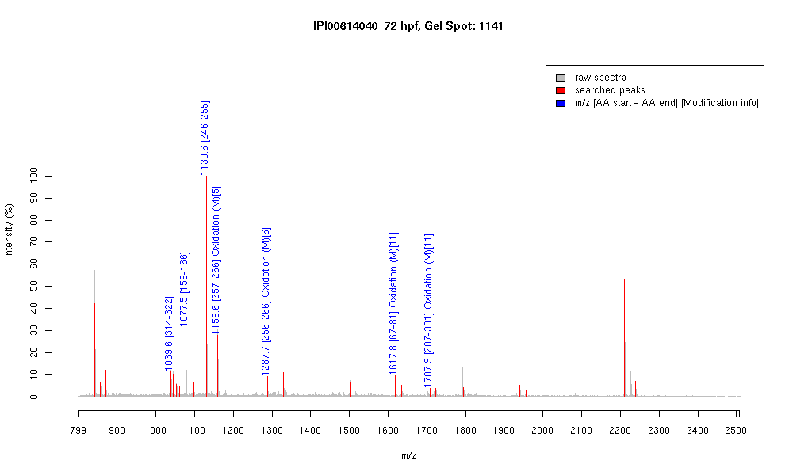

| Name | "PREDICTED: similar to tubulin, beta, 2isoform 2" |
|---|---|
| MW | 50275.2 |
| PI | 4.79 |
| Mascot Protein Score | 116 |
| Masses (matched / unmatched) | 7 / 30 |

| Peptide | MZ (calc) | MZ (observed) | Error (DA) | Error (PPM) | Start | Stop | Modifications |
|---|---|---|---|---|---|---|---|
| YLTVAAVFR | 1039.5935 | 1039.5942 | 0.0007 | 1 | 314 | 322 | |
| IREEYPDR | 1077.5323 | 1077.5392 | 0.0069 | 6 | 159 | 166 | |
| FPGQLNADLR | 1130.5953 | 1130.6033 | 0.008 | 7 | 246 | 255 | |
| LAVNMVPFPR | 1159.6292 | 1159.6331 | 0.0039 | 3 | 257 | 266 | Oxidation (M)[5] |
| KLAVNMVPFPR | 1287.7241 | 1287.7275 | 0.0034 | 3 | 256 | 266 | Oxidation (M)[6] |
| AVLVDLEPGTMDSVR | 1617.8152 | 1617.826 | 0.0108 | 7 | 67 | 81 | Oxidation (M)[11] |
| ALTVPELTQQMFDAK | 1707.8622 | 1707.8556 | -0.0066 | -4 | 287 | 301 | Oxidation (M)[11] |